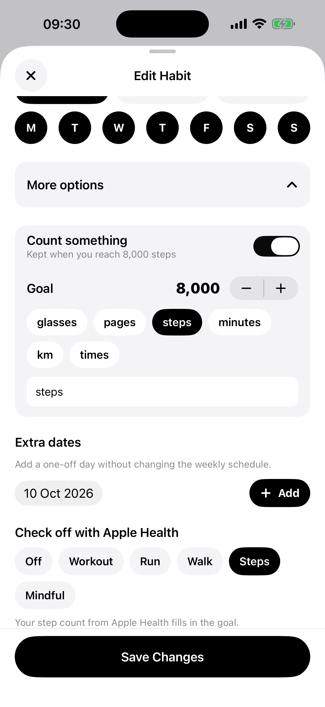
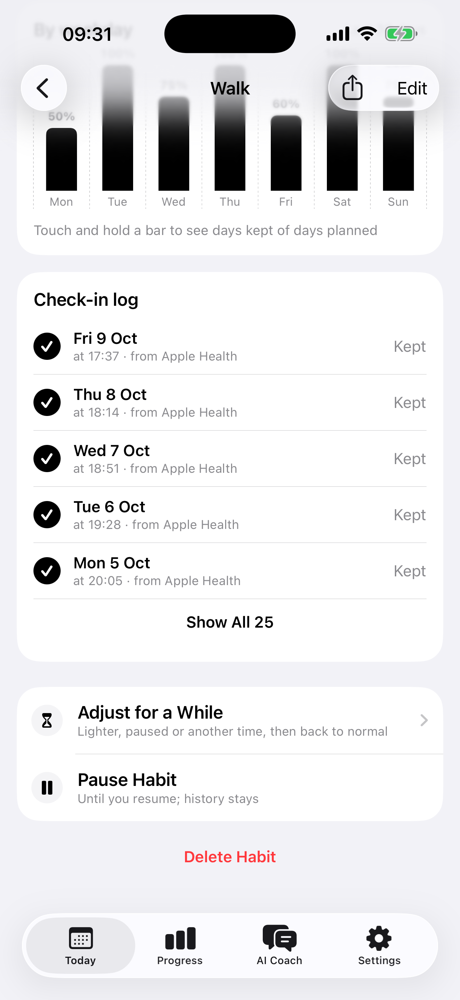
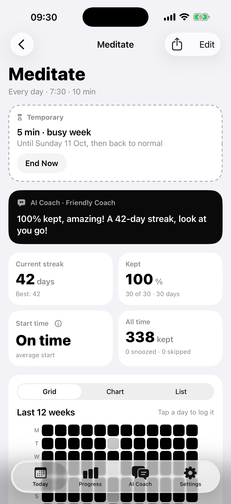

habitnex
Habits that actually stick.
The AI coach that knows your calendar.
 🔥
⏳
🔥
⏳
The AI coach that knows your calendar.
🔥
⏳
Your habit moves. It isn’t lost.
🔥
⏳
Choose how your AI coach talks to you.

Say it. Your AI coach fixes the plan.

Real numbers, not “Great job!”

See your whole year, day by day.

Your AI coach writes each one. Answer it right there.
Morning run4h ago
Alex, your 25-minute morning run is waiting. A few steady steps are a win.
Gymnow
Alex, your 60 minutes at the gym are waiting. Take it one step at a time—you’ve got this.
Apple Health checks it off for you.


Go lighter for a while. It goes back by itself.
